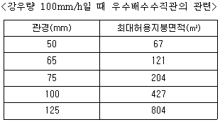
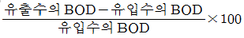
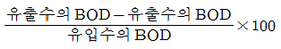
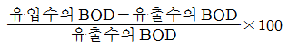
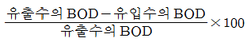

건축설비산업기사 (2005-03-20 기출문제)
1과목: 건축일반
1. 상점에서 진열창의 반사방지를 위한 방법이 아닌 것은?
- 진열장 내의 밝기를 인공적으로 높게 한다.
- 차양을 단다.
- 유리면을 직각이 되게 한다.
- 특수한 경우에는 곡면유리를 사용한다.
(정답률: 90%)

2. 철근의 피복두께의 필요성에 대한 설명으로 옳지 않은 것은?
- 철근의 방청
- 내화성 확보
- 부착력 증대
- 블리딩 방지
(정답률: 20%)
3. 철근콘크리트 단순보의 늑근 배근에 관한 기술 중 옳은 것은?
- 보의 양단에 이를수록 많이 넣는다.
- 보의 양단에 이를수록 적게 넣는다.
- 보의 중앙에서 많게 한다.
- 보의 전단면에 항상 동일한 간격으로 배근한다
(정답률: 알수없음)
4. 벽돌조에서 창문나비가 2.4m인 경우 인방구조는 어느 것이 가장 합리적인가?
- 벽돌로 평아아치를 쌓는다.
- 외부는 벽돌 세워쌓기, 내부는 평아아치를 쌓는다.
- 철근콘크리트 인방보를 설치한다.
- 석재 인방보를 설치한다.
(정답률: 50%)
5. 철근콘크리트 기둥에 대한 설명으로 잘못된 것은?
- 띠철근 압축부재 단면의 최소 치수는 200mm이다.
- 띠철근은 주근의 좌굴을 방지하는 효과가 있다.
- 띠철근 압축부재의 단면적은 40,000mm2 이상이어야 한다.
- 나선철근 압축부재 단면의 심부 지름은 200mm 이상이어야 한다.
(정답률: 알수없음)
6. 다음 호텔 중 시티호텔에 속하지 않는 것은?
- 온천호텔
- 터미널호텔
- 커머셜호텔
- 아파트먼트호텔
(정답률: 85%)
7. 일반적으로 병원의 건축계획에서 병원 전체 면적 산출의 기준이 되는 것은?
- 의사 인원수
- 병상 개수
- 간호사 인원수
- 전체 직원수
(정답률: 79%)
8. 사무실 건물 코어내의 각 공간의 위치에 대하여 설명한 것중 틀린 것은?
- 엘리베이터는 가급적 중앙에 집중시키지 말 것
- 코어 내의 공간의 위치가 명확할 것
- 엘리베이터 홀이 출입구 문에 바싹 접근해 있지 않도록 할 것
- 잡용실, 급탕실은 가급적 접근시킬 것
(정답률: 알수없음)
9. 주택의 부엌 일부에다 간단히 식탁을 꾸민 것을 무엇이라 하는가?
- Living Kitchen
- Dining Kitchen
- Dining Terrace
- Dining Porch
(정답률: 40%)
10. 쇼핑센타(Shopping center)를 구성하는 주요 요소와 가장 관계가 먼 것은?
- 핵상점
- 페디스트리언 지대
- 터미널(Terminal)
- 몰(mall)
(정답률: 60%)
11. 다음의 철근콘크리트구조의 보에 관한 설명 중 가장 옳지 않은 것은?
- 벽돌이나 블록벽 등에 얹혀 있는 보는 단순보로 볼 수 있다.
- 주요한 보는 압축측에도 철근을 배근하는 복근으로 한다.
- 바닥판의 일부가 보의 일부로 간주될 때 이를 T형보라 한다.
- 단순보의 주근은 양단부에서는 하부에, 중앙부에서는 상부에 더 많이 배근한다.
(정답률: 65%)
12. 다음 철골보의 종류 중 설비배관을 설치하기에 가장 부적당한 것은?
- 유공웨브보
- 허니컴보
- 래티스보
- 상자형보
(정답률: 67%)
13. 슬럼프 시험(slump test)의 목적에 관한 설명으로 가장 옳지 않은 것은?
- 골재의 입도(grading) 측정
- 반죽질기(consistency) 측정
- 시공연도(workability)의 판단
- 마무리(finishing)의 용이성을 가늠하는 수단
(정답률: 알수없음)
14. 학교의 운영방식에 대한 설명 중 틀린 것은?
- 종합교실형은 교실수와 학급수가 일치하며 초등학교 저학년에 적합하다.
- 교과교실형은 학생의 이동이 심하고 이동에 대한 동선에 주의해야 한다.
- 플라톤형은 학급의 과밀해소를 위해 활용하는 방식으로 별도의 시설이 필요치 않으며 적은 교사를 갖고도 운영할 수 있다.
- 달톤형은 학급과 학년을 없애고 각자의 능력에 따라 교과를 선택하고 일정한 교과가 끝나면 졸업하는 형태이다.
(정답률: 알수없음)
15. 철근콘트리트 압축부재의 축방향 주철근의 최소개수는 직사각형 띠철근 내부의 철근의 경우 몇 개인가?
- 4개
- 5개
- 6개
- 7개
(정답률: 31%)
16. 다음 중 도서관 계획에서 가장 알맞지 않은 것은?
- 모듈러 시스템을 도입한다.
- 폐가식 서고가 많은 보존목적의 대규모 도서관의 경우, 서고와 열람ㆍ사무부분이 일체구조로 구성되는 것이 유리하다.
- 도서관은 지역 사회의 중심으로 이용이 편리한 곳에 배치한다.
- 서고는 다소 어두운 곳이 보존상 유리하다.
(정답률: 알수없음)
17. 아파트의 평면형식에 관한 설명 중 옳은 것은?
- 계단실형은 프라이버시와 통풍이 불량하다.
- 편복도형은 통풍 및 채광은 좋지 않지만 프라이버시의 해결에 유리하다.
- 중복도형은 채광, 통풍이 불리하다.
- 집중형은 대지의 이용도가 높고 채광, 통풍조건을 양호하게 할 수 있다.
(정답률: 39%)
18. 폭이 춤보다 넓은보(wide girder)로 설계하는 이유로 가장 적합한 것은?
- 강성이 증가되어 구조 효율이 향상되므로
- 콘크리트량이 줄어들기 때문에
- 층고를 줄이거나, 천장 공간을 효율적으로 활용하기 위하여
- 설계 디자인이 자유롭기 때문에
(정답률: 67%)
19. 철근콘크리트 벽체에 관한 설명 중 가장 옳지 않은 것은?
- 철근콘크리트벽체는 계단실, 엘리베이터실 등의 코어(core)에 사용된다.
- 지하실벽은 축방향력과 휨모멘트 및 토압에 의한 휨을 받는다.
- 벽체는 연속주열로 설계되므로 주로 가로철근이 주근이 된다.
- 기둥을 벽처럼 얇고 나비가 큰 단면으로 하는 경우를 벽기둥이라 한다.
(정답률: 50%)
20. 플랫 슬래브에 대한 설명으로 옳지 않은 것은?
- 내부에 보 없이 바닥판만으로 구성한다.
- 실내공간 이용율이 높으며 고층건물의 층고를 낮게할 수 있다.
- 바닥판이 두꺼워져서 고정하중이 커진다.
- 구조가 복잡하며 공사비가 많이 든다.
(정답률: 60%)
2과목: 위생설비
21. 80℃의 온수 100[㎏]에 7℃의 물 130[㎏]을 혼합하면 몇 ℃의 물이 되는가?
- 36.2℃
- 38.7℃
- 42.3℃
- 44.5℃
(정답률: 50%)
22. 최대강우량 60mm/h의 지역에 있는 수평투영면적 1,200m2의 건물에 4개의 우수배수수직관을 설치할 경우 알맞는 관경은?

- 50mm
- 65mm
- 75mm
- 100mm
(정답률: 82%)
23. 급수배관시 일반적으로 유속은 얼마 이하로 계획하는가?
- 0.5 m/sec
- 1 m/sec
- 2 m/sec
- 3.5 m/sec
(정답률: 알수없음)
24. 호텔의 주방이나 레스토랑의 주방 등에서 배출되는 세정배수 중의 유지분을 포집하기 위해 사용되는 포집기는?
- 샌드 포집기
- 그리스 포집기
- 오일 포집기
- 플라스터 포집기
(정답률: 알수없음)
25. 국소식 급탕방식과 비교한 중앙식 급탕방식의 특징에 대한 설명 중 옳지 않은 것은?
- 일반적으로 열원장치는 공조설비와 겸용하여 설치되기 때문에 열원단가가 싸다.
- 시공 후, 기구 증설에 따른 배관 변경 공사를 하기 어렵다.
- 급탕개소가 적기 때문에 설비규모가 작고 열손실이 적다.
- 배관에 의해 필요개소에 어디든지 급탕할 수 있다.
(정답률: 64%)
26. 배관의 전체길이가 20[m]인 곳의 싱크대 수도꼭지에 압력 탱크식으로 급수하려 한다. 수도꼭지는 탱크로부터 수직높이 10[m]인 곳에 설치되어 있고, 배관의 전마찰손실수두를 7[m]라고 할 때 이 압력탱크의 최저필요압력은? (단, 수도꼭지의 최저수압을 0.3[kg/㎝2]로 한다.)
- 4kg/㎝2
- 3kg/㎝2
- 2kg/㎝2
- 1kg/㎝2
(정답률: 알수없음)
27. 급탕설비에서 2관식(복관식) 배관을 하는 이유로 가장 타당한 것은?
- 연료를 절약하기 위하여
- 간접가열식으로 하기 위하여
- 급탕꼭지를 열었을 때 온수가 바로 나오도록 하기 위하여
- 배관이나 보일러 내에 스케일부착을 적게 하기 위하여
(정답률: 알수없음)
28. 생물화학적 산소요구량(BOD)제거율을 바르게 나타낸 관계식은?




(정답률: 알수없음)
29. 스프링클러 헤드에서 물을 비산하는 부분은?
- 디플렉터
- 솔러레버
- 밸브캡
- 노즐
(정답률: 60%)
30. 버큠 브레이커(Vaccum breaker)는 주로 어느 방식의 대변기에 부착하여 사용되는가?
- 하이탱크식
- 세정밸브식
- 사이펀방식
- 로우탱크식
(정답률: 알수없음)
31. 수도직결방식 급수 설계시 높이 12m에 세정밸브 설치시 수도 본관의 최저 압력은? (단, 관내 마찰손실은 3mAq임.)
- 2.2㎏/㎝2
- 3.0㎏/㎝2
- 4.2㎏/㎝2
- 5.0㎏/㎝2
(정답률: 39%)
32. 급수방식 중 수도직결방식에 대한 설명으로 틀린 것은?
- 정전시 급수가 불가능하다.
- 단수시 급수가 불가능하다.
- 소규모 건물에 주로 사용된다.
- 위생성 및 유지, 관리 측면에서 가장 바람직한 방식이다.
(정답률: 50%)
33. 옥내소화전이 3층에 4개, 4층에 3개, 5층에 3개 설치되어있다. 수원의 저수량은 최소 얼마이상인가?
- 10.4m3
- 13m3
- 15.6m3
- 18.2m3
(정답률: 17%)
34. 도시가스 공급방식중 중압공급 방식의 공급압력 범위는?
- 0.1MPa 미만
- 0.1MPa 이상, 1MPa 미만
- 1MPa 이상, 2MPa 미만
- 2MPa 이상
(정답률: 85%)
35. 펌프를 운전해서 규정유량을 수송하고 있다. 압력계에서 40m, 진공계에서 2m를 읽었을 때 양정은 얼마인가?(단, 진공계와 압력계의 수직거리는 40㎝이고 흡입관과 송출관의 직경은 동일하다.)
- 38.4m
- 40.5m
- 42.4m
- 52.4m
(정답률: 17%)
36. 다음 중 건축설비의 급배수용으로 가장 많이 사용되는 펌프 형식은?
- 원심식
- 사류식
- 축류식
- 회전식
(정답률: 42%)
37. 압력에 대한 설명 중 맞는 것은?
- 1 공학기압은 760 mmHg이다.
- 1 표준대기압은 10 mAq이다.
- 1 bar는 1 N/m2이다.
- 1 kgf/㎝2은 10 mAq이다.
(정답률: 20%)
38. 2개 이상의 엘보를 사용하여 신축을 흡수하는 이음쇠는?
- 슬리브형 신축이음
- 스위블 조인트
- 신축곡관
- 벨로즈형 신축이음
(정답률: 알수없음)
39. 수평 배수 횡주관에서 배수관이 막혔을 시 청소를 하기위해 청소구 설치를 반드시 해야 한다. 이 경우 배관경이 100 mm 일 때 청소구의 적정 설치 간격은 얼마로 해야 하는가?
- 30 m 이내
- 15 m 이내
- 20 m 이내
- 25 m 이내
(정답률: 12%)
40. 일반적으로 소규모 건물의 설계시에 관경결정, 그리고 중규모 이상인 건물의 설계 도중에 관경을 개략적으로 계산할 때 사용되는 급수관의 관경결정방법은?
- 관균등표에 의한 방법
- 압력수조에 의한 방법
- 관마찰저항선도에 의한 방법
- 동시기구수에 의한 방법
(정답률: 44%)
3과목: 공기조화설비
41. 중앙공조기(AHU)에서 예열기가 하는 역할은?
- 급기를 가열
- 외기를 가열
- 환기를 가열 가습
- 외기를 가열 가습
(정답률: 65%)
42. 주방, 공장, 실험실에서와 같이 오염물질의 확산 및 방산을 극소화시키기 위한 환기방식으로 가장 적합한 것은?
- 희석환기
- 전체환기
- 집중환기
- 국소환기
(정답률: 알수없음)
43. 외기온도 t0 = -10℃, 실내온도 ti = 20℃일 때, 면적 10m2를 통하여 손실되는 열량은 얼마인가?(단, 열관류율 K = 0.5㎉/m2h℃)
- 50㎉/h
- 100㎉/h
- 150㎉/h
- 200㎉/h
(정답률: 알수없음)
44. 전동기로 구동되는 기계로부터 발생되는 열량이 실내부하에 가장 큰 영향을 미치는 경우는?
- 전동기와 기계가 모두 실내에 있을 때
- 전동기는 실외에 있고, 기계는 실내에 있을 때
- 전동기는 실내에 있고, 기계는 실외에 있을 때
- 전동기와 기계가 모두 실외에 있을 때
(정답률: 73%)
45. 흡입구 종류 중 바닥에 설치하기 적당한 것은?
- 라인형 흡입구
- 펀칭 메탈형 흡입구
- 머쉬룸형 흡입구
- 격자형 흡입구
(정답률: 알수없음)
46. 관말트랩 주변에 냉각 레그의 위치로서 옳은 것은?
- 관말트랩 뒤쪽
- 관말트랩 앞쪽
- 관말트랩 앞뒤
- 환수주관 중간
(정답률: 50%)
47. 배관에 설치하여 관속의 유체에 섞여 있는 모래 등 이물질을 제거하기 위하여 설치하는 부속류는?
- 트랩
- 스트레이너
- 밸브
- 볼조인트
(정답률: 알수없음)
48. 어떤 펌프의 회전수가 1,000rpm일 때 양정이 45mAq이었다. 이 펌프의 회전수를 1,200rpm으로 증가시켰을 경우의 양정은 얼마인가?
- 31.3 mAq
- 45.2 mAq
- 64.8 mAq
- 78.6 mAq
(정답률: 알수없음)
49. 다음의 공조방식 중에서 전공기 방식이 아닌 것은?
- 멀티존유닛방식
- 단일덕트방식
- 유인유닛방식
- 이중덕트방식
(정답률: 알수없음)
50. 흡수식냉동기의 특징으로 옳지 않은 것은?
- 소음, 진동이 크다.
- 증기 또는 고온수를 열원으로 하므로 전력량이 적다.
- 진공으로 운전되므로 고압가스 취급법의 적용을 받지 않는다.
- 부하가 변동되어도 안정된다.
(정답률: 알수없음)
51. 일사를 받는 지붕 또는 외벽체로부터의 취득열량을 계산하고자 하는 경우 필요한 요소이다. 부적당한 것은?
- 면적
- 열관류율
- 상당외기 온도차
- 실내외 온도차
(정답률: 알수없음)
52. 탄산가스의 함유량이 실내공기의 오염정도를 아는 척도로 쓰이는 이유는?
- 유독하기 때문에
- 공기와 잘 분리되기 때문에
- 함유량에 비례하여 산소 함유량이 줄기 때문에
- 탄산가스의 함유량에 비례하여 다른 오염물질도 증가되기 때문에
(정답률: 80%)
53. 온수난방 배관에서 리버스 리턴(Reverse return) 방식을 사용하는 이유는?
- 배관의 신축을 흡수하기 위하여
- 배관의 길이를 짧게 해줄 수 있기 때문에
- 온수의 유량공급을 동일하게 해주기 위하여
- 배관내의 공기배출을 용이하게 하기 위하여
(정답률: 알수없음)
54. 덕트내의 풍속이 8m/s인 경우 덕트내의 동압은?
- 1.2 mmAq
- 2.8 mmAq
- 3.9 mmAq
- 4.5 mmAq
(정답률: 알수없음)
55. 유리창을 통해 취득열량을 줄이기 위한 조건 중 부적당한 것은?
- 투과율이 작을 것
- 차폐계수가 작을 것
- 열관류율이 클 것
- 반사율이 클 것
(정답률: 40%)
56. 표준대기압에 대한 설명 중 틀린 것은?
- 수은기둥의 높이가 730mm일 때 바닥면이 받는 단위면적 당의 힘과 같다.
- 물기둥의 높이가 10.33m일 때 바닥면이 받는 단위면적 당의 힘과 같다.
- 대기를 이루고 있는 공기가 지구중력에 의해서 지표면에 가하는 단위면적당의 힘이다.
- 진공은 대기압보다 낮은 압력이다.
(정답률: 알수없음)
57. 공조기용 에어필터의 교체시기를 확인하기 위하여 설치하는 기기로 가장 적당한 것은?
- 차압계
- 기압계
- 휴미디스태트
- 회전계
(정답률: 67%)
58. 다음 가변 풍량 유니트중 기본적으로 송풍동력을 절감할 수 없는 것은?
- 벤추리형
- 유인형
- 바이패스형
- 교축형
(정답률: 43%)
59. 공장, 체육관과 같이 내부공간이 큰 장소에 가장 적합하고 쾌적도가 좋은 난방방식은?
- 증기난방
- 온수난방
- 복사난방
- FCU난방
(정답률: 알수없음)
60. 난방부하를 과도하게 계산하였을 경우 나타날 수 있는 현상이 아닌 것은?
- 날씨가 매우 추운 경우 실온을 적정하게 높일 수 없어 재실자들이 추위를 느낀다.
- 공조장치를 필요이상으로 큰 것을 선택하게 되어 설비비가 많이 든다.
- 공조장치가 적정운전조건보다 낮은 상태에서 운전되어 운전효율이 저하된다.
- 송풍기, 펌프 등이 크게 선정되어 필요이상의 운반동력을 사용하여 사용에너지가 증대된다.
(정답률: 알수없음)
4과목: 건축설비관계법규
61. 다음 중 물분무등소화설비를 설치해야 할 특정소방대상물이 아닌 것은?
- 항공기격납고
- 주차용건축물로서 연면적 800m2인 것
- 기계식주차장으로서 10대의 차량을 주차할 수 있는 것
- 통신기기실로서 바닥면적이 300m2인 것
(정답률: 알수없음)
62. 건축법상 건축물의 배관설비 기준에 적합하지 않는 것은?
- 배관설비를 콘크리트에 묻는 경우 부식의 우려가 있는 재료는 부식방지조치를 할 것
- 건축물의 주요부분을 관통하여 배관하는 경우에는 건축물의 구조내력에 지장이 없도록 할 것
- 급탕설비에는 폭발 등의 위험을 막을 수 있는 시설을 설치할 것
- 우수관과 오수관은 불가피한 경우가 아니라면 분리하지 않고 배관할 것
(정답률: 알수없음)
63. 소방시설의 정의에 해당되지 않는 것은?
- 방화설비
- 경보설비
- 피난설비
- 소화용수설비
(정답률: 65%)
64. 비상조명등을 설치하여야 하는 특정소방대상물의 기준으로 옳은 것은?
- 층수가 3층 이상인 건축물로서 연면적 3천제곱미터 이상인 것
- 지하층을 포함하는 층수가 3층 이상인 건축물로서 연면적 2천제곱미터 이상인 것
- 층수가 5층 이상인 건축물로서 연면적 2천제곱미터 이상인 것
- 지하층을 포함하는 층수가 5층 이상인 건축물로서 연면적 3천제곱미터 이상인 것
(정답률: 59%)
65. 다음 중 오수분뇨및축산폐수처리에관한법률상 분뇨수집 등의 의무가 제외되는 지역의 기준으로 옳은 것은?
- 가구수가 50호 미만인 지역
- 관광지로 수집, 운반이 어려운 지역
- 가구수가 100호 미만인 지역
- 해수욕장
(정답률: 알수없음)
66. 건축물의 출입구에 설치하는 회전문과 계단 또는 에스컬레이터와의 최소거리는?
- 2미터
- 3미터
- 4미터
- 5미터
(정답률: 알수없음)
67. 건축물의 면적, 높이 등의 산정방법에 대한 설명 중 틀린것은?
- 공동주택으로서 지상층에 설치한 기계실, 어린이 놀이터, 조경시설의 경우에는 당해 부분의 면적을 바닥면적에 산입하지 아니한다.
- 승강기탑, 계단탑 기타 이와 유사한 건축물의 옥상부분으로서 그 수평투영면적의 합계가 당해 건축물의 건축면적의 6분의 1이하인 것은 층수에 산입하지 아니한다.
- 층고는 방의 바닥구조체 윗면으로부터 위층 바닥구조체의 윗면까지의 높이로 한다.
- 공동주택의 1층을 피로티로 한 경우 바닥면적에 산입하지 아니한다.
(정답률: 25%)
68. 건축물에 설치하는 지하층 비상탈출구의 구조 및 설비 기준으로 옳지 않은 것은?
- 비상탈출구의 유도등의 설치는 소방법령이 정하는 바에 의할 것
- 비상탈출구의 유효너비는 0.75m 이상으로 할 것
- 비상탈출구는 출입구로부터 3m 이상 떨어진 곳에 설치할 것
- 비상탈출구에서 피난층 또는 지상으로 통하는 복도나 직통계단까지 이르는 피난통로의 유효너비는 0.9m 이상으로 할 것
(정답률: 알수없음)
69. 공동주택과 오피스텔의 난방설비를 개별난방방식으로 할경우 기준으로 옳지 않은 것은?
- 보일러는 거실외의 곳에 설치한다.
- 보일러실의 윗부분에는 그 면적이 0.5제곱미터 이상인 환기창을 설치한다.
- 보일러실의 아랫부분에는 지름 20센티미터이상의 배기구를 항상 열려있는 상태로 바깥공기에 접하도록 설치한다.
- 보일러의 연도는 내화구조로서 공동연도로 설치한다.
(정답률: 알수없음)
70. 분뇨처리시설을 설치하고자 하는 자는 환경부령이 정하는 바에 따라 누구의 승인을 얻어야 하는가?
- 시·도지사
- 환경부장관
- 건설교통부장관
- 보건복지부장관
(정답률: 알수없음)
71. 주거용 건축물에서 가구수가 5가구일 때 음용수용 급수관의 최소 지름은?
- 15㎜
- 20㎜
- 25㎜
- 30㎜
(정답률: 알수없음)
72. 지상층의 어떤 층의 바닥면적이 300m2일 경우 소방관련법상 무창층으로 인정되는 개구부 면적의 합계는?
- 15m2 이하
- 10m2 이하
- 7.5m2 이하
- 6m2 이하
(정답률: 30%)
73. 건축법상 승용승강기를 설치하여야 하는 대상건축물의 원칙적인 기준은?
- 건축물의 용도와 거실바닥면적
- 층수와 연면적
- 층수와 각층 바닥면적
- 건축물의 용도와 연면적
(정답률: 알수없음)
74. 특수소방대상물로 위락시설에 속하지 않는 것은?
- 무도학원
- 투전기업소
- 무도장
- 안마시술소
(정답률: 19%)
75. 금속제굴뚝은 목재 등의 가연재료로부터 얼마 이상을 떨어져서 설치하여야 하는가?
- 10cm
- 15cm
- 90cm
- 100cm
(정답률: 알수없음)
76. 문화 및 집회시설 중 공연장의 개별 관람석의 각 출구의 유효너비는? (단, 바닥면적이 300m2 이상인 것에 한함)
- 1m 이상
- 1.5m 이상
- 2.0m 이상
- 2.5m 이상
(정답률: 알수없음)
77. 건축물의 용도분류중 문화 및 집회시설로 볼 수 없는 것은?
- 종교집회장
- 집회장
- 생활권수련시설
- 동·식물원
(정답률: 42%)
78. 건축구조 기술사 등에 의해 구조계산을 안해도 되는 건축물은?
- 16층짜리 휴양 콘도미니엄
- 처마높이 9m인 건축물
- 기둥과 기둥 사이 거리가 30m인 건축물
- 다중이용건축물
(정답률: 30%)
79. 지하가중 터널로서 길이가 얼마 이상인 경우에 무선통신보조설비를 설치하여야 하는가?
- 500m
- 400m
- 300m
- 200m
(정답률: 60%)
80. 난방설비를 개별난방방식으로 하는 경우 건축법상 규정된 기준에 적합하지 않아도 되는 건축물은?
- 다세대주택
- 오피스텔
- 다가구주택
- 연립주택
(정답률: 알수없음)